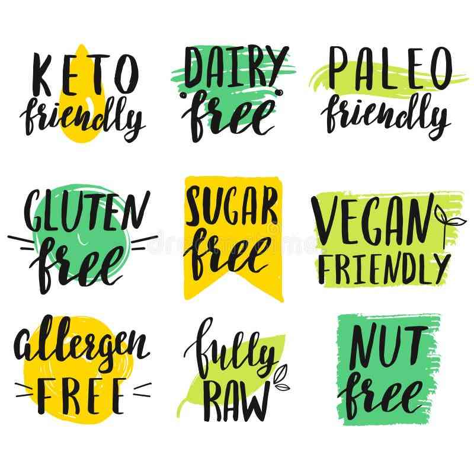

I'm about to say something controversial.
Most gluten‑free and vegan recipes you find online are written by people who don't understand scaling. They'll tell you to "just substitute 1:1" and call it a day.
That's bad advice. Dangerous advice, even.
Because here's the truth: dietary substitutions change the math. They change volume. They change moisture. They change structure. And if you scale those substitutions linearly, you're setting yourself up for disaster.
I learned this the hard way. A few years ago, a friend asked me to scale a gluten‑free birthday cake from 8 servings to 50. I thought, "Easy. Just multiply everything by 6.25."
The cake collapsed. Not because the original recipe was bad, but because the gluten‑free flour blend absorbed liquid differently at scale. What worked for 8 servings became a dry, crumbly mess at 50.
That's when I started studying the math of dietary scaling. Not just swapping ingredients, but understanding how those swaps behave when you multiply them.
Let me walk you through what I learned.
The Core Problem (Substitutions Are Not Linear) When you substitute an ingredient, you're changing the recipe's chemistry. Gluten‑free flour absorbs more liquid than wheat flour. Vegan egg replacers provide binding OR moisture, never both. Sugar substitutes don't caramelize.
These differences are manageable at small scale. But when you scale from 4 servings to 40, the small differences become big problems.
Example: A gluten‑free flour blend might need 10% more liquid than wheat flour. That's fine for 4 servings (an extra 2 tablespoons of milk). But for 40 servings? That's 1.25 cups of extra liquid. Enough to turn a cake into pudding.
The rule I use: Always test a substitution at the original scale first. Then scale only after you've confirmed the substitution works. Never, ever scale a substitution you haven't tested.
Dietary Restriction Scaling Assistant (The Tool That Helps) I built this tool specifically because the math got too complicated to do by hand.
Gluten‑Free Flour Blends (The Liquid Factor) Gluten‑free flours absorb more liquid than wheat flour. Some blends absorb 10-15% more. That means for every cup of wheat flour you replace, you need to add extra liquid.
The basic blend ratio I use (for 1 cup of wheat flour):
40% brown rice flour (48g)
30% tapioca starch (36g)
30% potato starch (36g)
1/4 tsp xanthan gum (0.8g)
But here's the scaling issue: The xanthan gum doesn't scale linearly. At small scale, 1/4 tsp per cup of flour works. At large scale (10x), you need less xanthan gum—about 1/8 tsp per cup.
Why? Xanthan gum is a hydrocolloid. It thickens liquids. Too much creates a gummy, unpleasant texture. The scaling exponent is about 0.7.
My rule for xanthan gum:
Original recipe (1 cup flour): 1/4 tsp
2x scale: 0.4 tsp per cup (not 0.5)
4x scale: 0.7 tsp per cup (not 1.0)
10x scale: 1.4 tsp per cup (not 2.5)
And liquid adjustment: Add 10-15% more liquid at any scale. That percentage stays constant. If the original recipe needed 1 cup milk, the scaled recipe still needs +10-15% milk per cup of flour.
Vegan Egg Replacers (Binding vs Moisture) There's no single vegan egg replacer that does everything an egg does. Eggs provide binding, leavening, moisture, fat, and structure. Different replacers cover different functions.
The four main vegan egg replacers and their jobs:
Replacer Ratio (per egg) Best for Scaling behavior Flax egg 1 Tbsp flax + 3 Tbsp water Binding (cookies, muffins) Scales linearly for binding, but add extra leavening at >4x Applesauce 1/4 cup Moisture (cakes, brownies) Scales linearly, but reduces structure at >6x Aquafaba (chickpea brine) 3 Tbsp Leavening (meringue, angel food) Scales linearly but whipping time changes Silken tofu 1/4 cup blended Dense moisture (cheesecake, brownies) Scales linearly, but blend in batches The scaling trap: Flax eggs work great at 1x or 2x. But at 6x, the binding becomes weak. The structure crumbles. You need to add a commercial binder (like Bob's Red Mill egg replacer) or reduce the scaling factor and batch instead.
My rule for vegan egg scaling: Never scale a flax‑egg recipe beyond 4x. If you need more, make multiple batches of 4x. Or switch to a commercial replacer that's designed for large batches.
Low‑Sodium Reduction (The 25% Rule) Reducing salt is not as simple as "use less." Salt affects flavor, yeast activity, and gluten structure.
The safe method: Reduce salt by 25% at a time, not all at once.
Step‑by‑step:
Calculate the original salt per serving (in grams and ounces).
Reduce by 25%. Bake a test batch.
Taste. If it's still too salty, reduce another 25% from the original (not from the reduced amount).
Repeat until the salt level is acceptable.
Why 25%? Because salt perception is logarithmic. A 25% reduction is noticeable but not disastrous. A 50% reduction is often inedible.
Scaling low‑sodium recipes: If you're scaling a recipe that already has reduced salt, the 0.85 exponent still applies. But your baseline is lower.
Example: Original recipe has 10g salt. You reduce to 7.5g (25% reduction). Then you scale to 4x. Scaling factor 4^0.85 = 3.24 Scaled salt = 7.5g × 3.24 = 24.3g
If you had used the original 10g baseline, you'd have 32.4g. That's 33% more salt. Still lower than the linear 40g, but higher than needed.
My advice: Do the reduction first. Then scale. Don't scale then reduce—the math gets messy.
Sugar Substitutions (Volume, Sweetness, and Moisture) Sugar does four things in baking: sweeten, brown, add moisture, and provide bulk. Sugar substitutes rarely do all four.
Common sugar substitutes and how they behave:
Substitute Volume swap Sweetness compared to sugar Moisture adjustment Erythritol 1:1 0.7x (less sweet) Add 10% liquid Allulose 1:1 0.7x None (browns like sugar) Stevia (pure powder) 1 tsp = 1 cup sugar 200-300x Add bulk (applesauce or yogurt) Monk fruit (with erythritol) 1:1 1x (blended) Same as erythritol Coconut sugar 1:1 0.8x None (but it's not low‑calorie) The scaling problem with erythritol: At small scale, adding 10% liquid works. At large scale (8x), that 10% becomes a lot of liquid—enough to change the recipe's consistency. You may need to reduce the liquid adjustment to 5% at very large scales.
My rule for sugar‑free scaling: Start with a 1:1 volume swap. Taste the raw batter. If it's not sweet enough, add 10% more substitute (not 20%). Bake a test. Adjust from there.
The Test Batch Rule (Non‑Negotiable) I cannot stress this enough: never scale a dietary substitution without making a test batch at the original yield first.
Here's why. You might think you know how a gluten‑free blend behaves. But every brand is different. King Arthur's gluten‑free flour absorbs differently than Bob's Red Mill. Your oven's humidity affects aquafaba whipping. Your tap water's pH affects flax egg gelling.
The only way to know is to test.
My testing protocol:
Make the original recipe (no substitution). Note texture, taste, appearance.
Make the same recipe with your substitution. Compare.
If it's close, scale to 2x. Test again.
If 2x works, scale to 4x. Test again.
If 4x works, you're safe to scale further.
How long does this take? A weekend. Maybe two. But it saves you from wasting 10 pounds of gluten‑free flour on a cake that collapses.
Real Example: Scaling a Vegan Chocolate Cake I recently helped a reader scale a vegan chocolate cake from 8 servings to 100 for a wedding. Here's what we did.
Original recipe (8 servings, vegan):
Flour: 240g
Cocoa powder: 60g
Sugar: 200g
Baking soda: 1 tsp (4.8g)
Salt: 1/2 tsp (3g)
Flax egg: 1 Tbsp flax + 3 Tbsp water (per egg, 2 eggs total)
Oil: 120g
Vinegar: 1 Tbsp (15g)
Water: 300g
The problem: Flax eggs at scale. At 12.5x (100 ÷ 8 = 12.5), we would need 25 flax eggs. That's a lot of flax gel. It would make the cake gummy.
The solution: Don't scale the flax egg linearly. Instead, switch to a commercial vegan egg replacer (Follow Your Heart) for the large batch. The replacer is designed for baking and scales linearly.
Final scaled recipe (100 servings):
Flour: 240g × 12.5 = 3,000g
Cocoa: 60g × 12.5 = 750g
Sugar: 200g × 12.5 = 2,500g
Baking soda: 4.8g × (12.5^0.75) = 4.8g × 5.9 = 28.3g (not 60g)
Salt: 3g × (12.5^0.85) = 3g × 7.5 = 22.5g (not 37.5g)
Vegan egg replacer: Follow Your Heart, follow package for 100 servings (about 1 cup powder + 2 cups water)
Oil: 120g × 12.5 = 1,500g
Vinegar: 15g × 12.5 = 187.5g (but scale vinegar linearly—it's acidic, not flavor‑intense)
Water: 300g × 12.5 = 3,750g (plus extra from egg replacer)
The cake worked. The bride never knew it was vegan. The reader cried happy tears.
The Common Mistake Box (Dietary Edition) Mistake Consequence Fix Scaling flax eggs linearly Gummy, dense texture Switch to commercial replacer at >4x Not adding extra liquid for gluten‑free Dry, crumbly cake Add 10-15% more liquid Reducing salt by 50% at once Bland, flat flavor Reduce 25% at a time Using erythritol at large scale without adjusting liquid Dry, cooling aftertaste Add 10% liquid, then taste and adjust Forgetting that xanthan gum doesn't scale linearly Gummy texture Use exponent 0.7 for xanthan gum The Quick Reference Card (Dietary Scaling) Gluten‑free:
Add 10-15% more liquid
Xanthan gum: New = Original × (Scale^0.7)
Test blend before scaling
Vegan eggs:
Flax eggs: Don't scale beyond 4x
Applesauce: Scales linearly but loses structure at >6x
Commercial replacers: Scale linearly, follow package
Low‑sodium:
Reduce 25% at a time
Then scale with exponent 0.85
Add acid (lemon, vinegar) to boost perceived saltiness
Sugar‑free:
Erythritol/allulose: 1:1 volume, add 10% liquid
Stevia: 1 tsp = 1 cup sugar, add bulk (applesauce)
Always taste raw batter and adjust
The golden rule: Test at original scale first. Then scale. Never skip the test.
I know dietary baking feels overwhelming. There are so many variables, so many substitutions, so many ways to fail.
But here's the good news: once you understand the math, it's not that hard. You just need to know which ingredients scale linearly and which don't. You need to test before you commit. And you need to be patient with yourself.
I've ruined more gluten‑free cakes than I can count. But each failure taught me something. Now I can scale a vegan, gluten‑free, low‑sugar cake for 100 people without breaking a sweat.
You can too. Just start small. Test. Scale. Repeat.
— Olivia
P.S. The reader with the vegan wedding cake? She sent me a photo. The cake was beautiful—three tiers, chocolate frosting, edible flowers. She wrote, "My mother‑in‑law asked for the recipe. She didn't believe it was vegan." That's the best compliment.
✅ 11
HTML ✅
class ✅
“”“Step 1”“Step 2”“”“”“”“+”
“”
12——